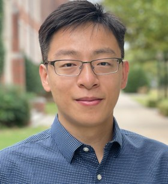
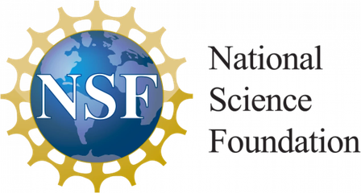
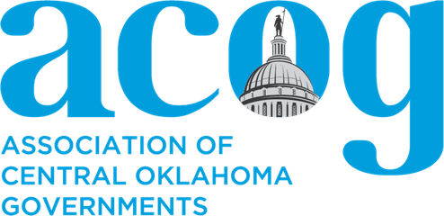
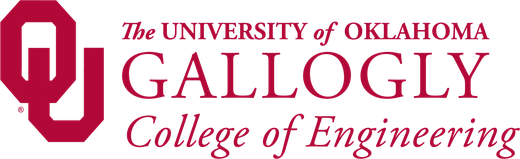

U.S. Department of Transportation, 2026 to 2032
ACCEL-RT
A $10 million center on automation-enabled logistics for rural and tribal communities along the I-40 corridor, led by our lab with UC Berkeley and the University of New Mexico.
Project siteThe University of Oklahoma School of Aerospace and Mechanical Engineering
Energy storage, controls, electrified transportation
The Energy Systems & Controls Lab (ESCL) at The University of Oklahoma advances the efficiency, safety, and sustainability of energy storage and mobility systems. We combine physics-based and data-driven modeling with intelligent control, from the materials inside a battery cell to fleets of electric and autonomous vehicles on real roads. The lab is directed by Dong Zhang, Assistant Professor in the School of Aerospace and Mechanical Engineering.
The lab received an NSF CAREER award, supported by the Dynamics, Control and Systems Diagnostics (DCSD) program. Award page
The lab welcomes PhD students Wonoo Choo and Zhicheng Xu.
PhD student Jorge Espin was a finalist for the Best Student Research Award at the 2024 Modeling, Estimation and Control Conference (MECC) and presented his work in Chicago.
The lab welcomes PhD student Mehrab Hasan.
Jorge Espin's paper was accepted for presentation at the 2024 Modeling, Estimation and Control Conference (MECC).
PhD student Yuichi Kajiura presented a poster at the 245th Electrochemical Society (ECS) Meeting in San Francisco, co-authored with Logan Scott.
The lab received $88k from the NSF Translational Research Projects program to study prognostics for second-life batteries, led by Yuichi Kajiura and Jorge Espin.
Logan Scott successfully defended his MS thesis.
The lab and OU Parking and Transportation received $180k to install EV charging stations on the OU Norman campus, supported by the ACOG Public Fleet Conversion Grants Program.
Dr. Zhang and colleagues received $30k from the AME Research Equipment Program to purchase a glovebox for battery research.
Yuichi Kajiura and Jorge Espin had papers accepted for presentation at the 2024 American Control Conference (ACC).
The lab received $2.3 million from the DOE Vehicle Technologies Office to deploy shared autonomous electric vehicles in Oklahoma tribal communities.
The lab received $218k from OCAST to explore advanced imaging for Li-ion batteries, in collaboration with Baker Hughes.
Dr. Zhang received $292k from the NSF EPSCoR Research Infrastructure Improvement Track-4 program to collaborate with Oak Ridge National Laboratory on next-generation batteries. OU news story
The lab welcomes graduate researcher Logan Scott.
Dr. Zhang served as a panelist for Advanced Sensors and Controls at the Baker Hughes Energy Frontiers Summit.
The lab welcomes PhD student Jorge Espin.
The lab welcomes PhD student Yuichi Kajiura.
Dr. Zhang completed a story on electric vehicles in Oklahoma with The Oklahoma News Report.
The lab has two main outputs: Knowledge and People.
Batteries now sit at the center of renewable integration, electric and autonomous vehicles, and a resilient grid. Unlocking their energy density, safety, and lifetime, and operating the fleets and grids that depend on them, is central to a cleaner energy and transportation future. Our work sits at the intersection of energy storage, mobility, control, optimization, and machine learning.
We train the next generation of engineers and leaders in energy storage, control theory, and electrified transportation. Our alumni now work at companies including Tesla, Texas Instruments, and Daimler Truck. Motivated students and researchers are welcome to apply through our Openings page.
Operating batteries at their true physical limits by estimating what cannot be measured.
Read moreSilicon/graphite composite anodes and all-solid-state cells, modeled and controlled from the physics up.
Read moreAutomated electric vehicles, drones, and roadway data put to work on real rural roads.
Read moreTurning retired electric-vehicle batteries into reliable packs for a second use.
Read moreObservers and identification methods with proofs, built for constrained, distributed, and undersensed systems.
Read moreU.S. Department of Transportation, 2026 to 2032
A $10 million center on automation-enabled logistics for rural and tribal communities along the I-40 corridor, led by our lab with UC Berkeley and the University of New Mexico.
Project siteU.S. Department of Energy, Vehicle Technologies Office
A $3.1 million program deploying shared autonomous electric shuttles as first- and last-mile transit in Atoka, Oklahoma, in the Choctaw Nation, integrated with the existing public transit service.
Read moreNational Science Foundation, 2025 to 2030
Modeling and control of lithium-ion batteries with silicon/graphite composite electrodes, treated as distributed parameter systems.
Award pageNSF translational research and the OU Growth Fund
A complete pipeline, from disassembly and rapid diagnosis to digital twins and control, that turns retired electric-vehicle packs into reliable second-life products.
Read more
Dong ZhangDirector Yuichi KajiuraPostdoctoral Researcher
Yuichi KajiuraPostdoctoral Researcher Jorge Esteban EspinPh.D. student
Jorge Esteban EspinPh.D. student Micah PopejoyM.S. student
Micah PopejoyM.S. student Haoran ZhuM.S. student
Haoran ZhuM.S. student

